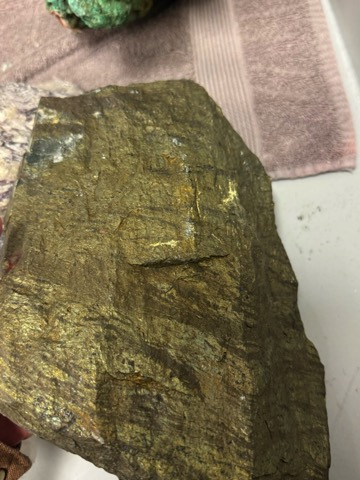
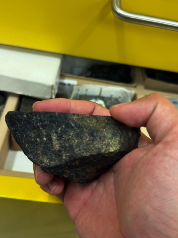
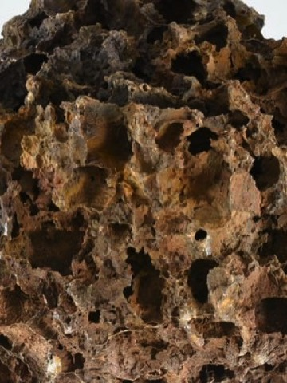
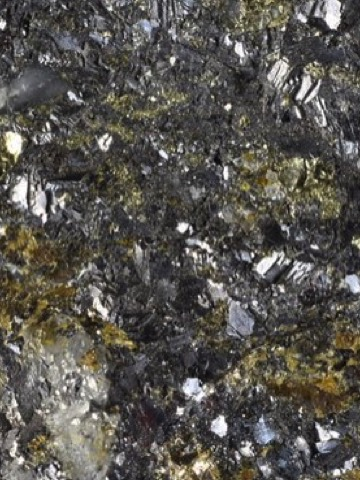
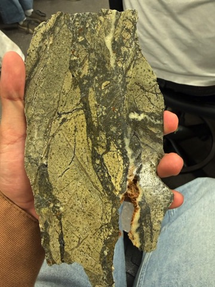
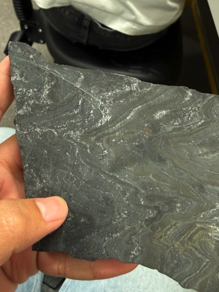
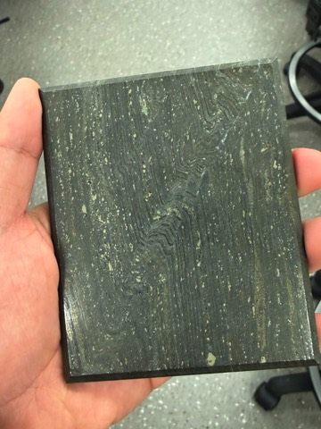
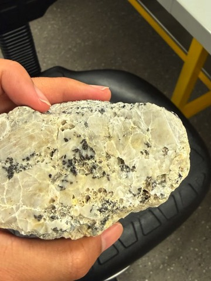
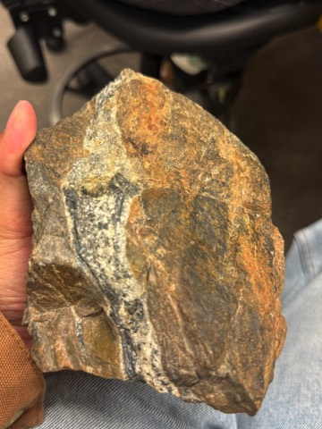

Twelve A4 pages to print and bring. The lab test allows a printed sheet, not a phone, tablet or laptop.
Print at A4, 100% scale. Colour helps most on the Part B pages and the two photo atlas pages; the rest also reads well in black and white. Every fact comes from the lecture pages and lab sheets on this site, with the lecture number in brackets.
Mostly iron oxide (hematite, magnetite, goethite), often banded with chert or jasper Iron ore (BIF)
Weathered: goethite, cellular boxwork, jarosite, malachite, azurite, chrysocolla, sooty chalcocite Regolith / oxide zone
Sulphide or oxide inside a dark mafic or ultramafic igneous rock
Sulphide in layers parallel to the bedding (banded, massive)
Sulphide in veins that cut the rock
Zn-Pb filling open spaces and breccia in carbonate (dolomite, limestone), no igneous rock MVT
Epithermal: no number in L14. Surface to ≈ 3 km, cooler than porphyry. Sources: L2, L7, L9 to L11, L13, L15, L16.
| Type | Ore minerals | Texture | Host rock · alteration | Syn / epi | Setting |
|---|---|---|---|---|---|
| VMSL6, L10 | py, cp ± po (Cu core, stringer); sp, gn, barite (top, edge) | massive or banded; stringer veins below | felsic tuff, rhyolite, dacite, basalt · footwall chlorite-sericite-silica | syngenetic | seafloor vents (black smokers) over a magma |
| SEDEXL3, L9 | fine sp, gn, py ± barite; little cp | fine laminated, parallel to bedding; soft-sediment folds | dark carbonaceous or dolomitic siltstone, shale · siderite-ankerite halo; no volcanics | syngenetic(exhalative); or early diagenetic | reduced basin inside a continent |
| Porphyry CuL11 | cp, bn, mo, py, mt; supergene cc, cv | stockwork; A, B, D veins; disseminated | porphyritic intrusion (monzonite, diorite) · potassic → phyllic → propylitic | epigenetic | magmatic arc above subduction; Cu-Au-Fe skarn in limestone next to it |
| EpithermalL14 | py, honey sp, gn, Au, Ag minerals, tellurides | banded quartz-adularia veins; quartz replacing platy calcite; floating clast breccia | andesite, dacite, rhyolite · adularia-illite; advanced argillic (alunite, pyrophyllite) in high sulphidation | epigenetic | hot springs to ≈ 3 km, above porphyries, boiling |
| Orogenic AuL13 | py, asp, invisible Au; tellurides (Kalgoorlie); Au-Sb shallow, Au-As deep | quartz-carbonate veins, laminated (crack-seal), lodes | greenstone, BIF, shale · carbonate (ankerite), sericite, albite, fuchsite | epigeneticlate | metamorphic belt, compression, shear zones |
| Carlin AuL13 | fine As-pyrite (Au in rims); As-Sb minerals; no visible Au | disseminated, replacement | carbonaceous argillite, limestone · strong silicification (jasperoid) | epigenetic | Nevada, back-arc extension |
| Magmatic Ni-CuL7, L8 | po (some magnetic), pn, cp ± mt | massive at base, matrix, disseminated | komatiite (spinifex), norite, gabbro · talc-carbonate, serpentine | syngenetic | komatiite lava channels; Sudbury impact melt |
| ChromiteL8 | chromite | massive, nodular, disseminated chromitite | serpentinised dunite in harzburgite | syngenetic | podiform, in an ophiolite |
| CMPVL16 | gn, sp, freibergite, asp, cp; Ag | veins cut bedding; crustiform, cockade, comb | dark metasiltstone (greenschist) · narrow sericite, wide bleaching | epigenetic | metasediments away from a granite |
| Sn-WL15 | cassiterite, wolframite, scheelite, mo, stannite | quartz veins, greisen | granite and its roof rocks · greisen (muscovite-quartz-topaz), tourmaline, fluorite | epigenetic | shallow (1.5 to 5 km) fractionated granite |
| MVTL16 | sp (colloform, pale), gn ± fluorite, barite | open-space fill, breccia | platform dolomite, limestone · dolomitisation, dissolution | epigenetic | basin brines, no igneous link |
| Sediment CuL16 | cc, cv, bn, cp, native Cu, Ag; framboidal py outside ore | very fine, banded, disseminated | reduced black shale, siltstone, dolomite above red beds · bleaching | at the redox frontL16 does not give the timing | continental rift, desert |
| Iron oreL21 | hm, mt, martite, goethite | banded (BIF), massive, microplaty | banded iron formation (chert, jasper) | BIF syngeneticore by later leaching | Precambrian basin; supergene enrichment |
| RegolithL2 | goethite, hm, jarosite; malachite, azurite, chrysocolla, cuprite; cc, cv below | gossan, boxwork, botryoidal, leached | any rock over sulphide · bleached, kaolinite | supergene(later) | above the water table; enrichment just below |
VMS: volcanic host, much cp, ≈ 350 °C
SEDEX: carbonaceous or dolomitic siltstone, fine Zn-Pb, little Cu, ≈ 80 to 200 °C
Epithermal: banded quartz-adularia veins, chalcedony, volcanic host (surface to ≈ 3 km)
Orogenic: massive or laminated quartz-carbonate with asp, deformed greenstone or shale (deep)
Porphyry: stockwork of thin veins in an intrusion, cp-bn-mo
Epithermal: banded veins in volcanic rock; low sulphidation has under 2% sulphide (L14)
Banded: layers parallel to bedding: VMS, SEDEX
Vein: sulphide cuts the bedding: CMPV, other veins
Iron ore: hematite-magnetite ore, often still banded like the BIF (L21)
Gossan: goethite-hematite over sulphide, boxwork, jarosite, Cu minerals (L2, lab sheet)
Magmatic: po-pn in dark igneous rock, magnetic
VMS: py-sp-gn-cp, banded, felsic volcanic
Fresh sulphide: primary ore
Goethite, Cu carbonates: oxide zone above it
Gidginbung: grouped as mesothermal Au, but silica-pyrophyllite-covellite looks like advanced argillic
Vatukoula: epithermal (tellurides). Mount Isa: SEDEX in L9
| Alteration | Minerals you see | What it tells you |
|---|---|---|
| Potassic | pink K-feldspar, dark biotite, quartz (+ magnetite) | hot, near-magmatic fluid; core of a porphyry (L2, L11) |
| Phyllic | pale quartz-sericite-pyrite | around the potassic core of a porphyry; D veins have this halo (L2, L11) |
| Propylitic | green chlorite, epidote, albite, carbonate, pyrite | far from the centre, cooler, near-neutral fluid (L2) |
| Argillic | kaolinite, dickite, sericite, montmorillonite | acidic, cooler fluid (L2) |
| Advanced argillic | vughy silica, alunite, pyrophyllite, dickite, diaspore, opaline silica | very acidic fluid near the top of epithermal and porphyry systems; high sulphidation (L2, L14) |
| Adularia-illite | adularia, then illite-muscovite, in banded veins | low sulphidation epithermal; Au and Ag come with the illite stage (L14) |
| Chlorite-sericite-silica | dark Fe-rich chlorite under the ore | VMS footwall and stringer zone (L10) |
| Fe-carbonate halo | siderite (brown spots) near ore, ankerite further out | SEDEX (L9) |
| Carbonate-sericite-albite | ankerite, sericite, albite, green fuchsite, py, asp | orogenic gold (L13) |
| Greisen | muscovite + quartz replacing feldspar, topaz, tourmaline, cassiterite | Sn-W at the edge of a granite (L15) |
| Skarn | garnet, diopside, magnetite, epidote in limestone | Cu-Au-Fe skarn beside a porphyry intrusion (L11) |
| Silicification | jasperoid, silicified breccia | Carlin-type gold (L13) |
| Bleaching | pale rock that lost its iron | CMPV vector (L16); weathering in the oxide zone (L2) |
Short names · py pyrite · cp chalcopyrite · po pyrrhotite · pn pentlandite · sp sphalerite · gn galena · bn bornite · mo molybdenite · asp arsenopyrite · cc chalcocite · cv covellite · hm hematite · mt magnetite
| Say this type | …if the specimen shows | Lab examples (not needed in your answer) |
|---|---|---|
| VMS L10 | Banded or massive py-sp-gn-cp in volcanic rock; chlorite stringer zone | Rosebery, Mt Lyell, Scuddles, Woodlawn, Kuroko |
| SEDEX L9 | Very fine laminated Zn-Pb-py in dark carbonaceous siltstone; feels heavy; little Cu | Mt Isa, Lady Loretta |
| Porphyry Cu L11 | Stockwork of thin quartz veins in a porphyry; cp-bn-mo; pink K-feldspar or biotite | Bingham, Ok Tedi, Goonumbla, Grasberg |
| Skarn L11; lab sheet | Garnet, pyroxene, magnetite with cp, in limestone next to an intrusion | Grasberg (skarn samples) |
| Epithermal L14 | Banded quartz-adularia or chalcedony veins, breccia, honey sphalerite, little sulphide, volcanic host | Woodlark, Vatukoula |
| Orogenic (mesothermal) Au L13 | Quartz-carbonate veins with py + asp in greenstone or shale; ankerite, sericite, green fuchsite | Kalgoorlie, Lancefield, Paddington |
| Carlin Au L13 slides 31 to 33 | Jasperoid or silicified claystone or limestone; gold too fine to see | Carlin |
| Magmatic Ni-Cu L7, L8 | Bronze po + pn in komatiite or a mafic intrusion; some pyrrhotite is magnetic | Kambalda, Sudbury |
| Chromite L8 | Black chromite (massive, nodular) in serpentinised dunite | Coolac |
| CMPV (polymetallic vein) L16 | Gn-sp-freibergite veins with siderite that cut dark metasiltstone | Webbs |
| Sn-W L15 | Cassiterite or wolframite in quartz, with topaz, tourmaline, muscovite (greisen), near granite | Tallebung (L3 photo); Mole River (lab sheet) |
| Iron ore L21 | Dense hematite-magnetite, often banded with chert or jasper (BIF) | Middleback Ranges |
| Regolith (oxide zone) L2 | Goethite, boxwork, jarosite, malachite or azurite; no fresh sulphide | Mt Kelly, Pyrite Hill |
Orogenic: quartz-carbonate with py + asp, gold, greenstone or shale (L13)
CMPV: Ag-Pb-Zn veins (gn, sp, freibergite) with siderite in metasiltstone (L16)
Porphyry: veins inside the intrusion (L11)
Skarn: garnet-pyroxene-magnetite rock in limestone beside it (L11)
Ni-Cu: bronze po-pn sulphide (L7)
Chromite: black oxide, no sulphide, in serpentinite (L8)
SEDEX: you can see the fine Zn-Pb sulphide bands (L9)
Carlin: silicified claystone or limestone, gold invisible (L13)
1 Deposit type · 2 ore and gangue minerals · 3 texture · 4 host rock and alteration · 5 syngenetic or epigenetic · 6 temperature and depth · 7 setting. If a specimen is only host rock or gossan, say so, then name the deposit type it belongs to.
| Sample | What you saw | Type, genesis, temperature |
|---|---|---|
| A | Banded sulphide: cp + po | VMS; syngenetic, seafloor; ≈ 350 °C |
| B | Massive po (look for pn) | Magmatic Ni-Cu; syngenetic (magmatic); > 1000 °C |
| C | Holes where pyrite dissolved, in pyroclastic rock | Oxide zone (gossan)*; supergene, later than the ore (maybe Gidginbung*) |
| D | Massive, coarse gn + sp | 150 to 250 °C; Zn-Pb part of VMS or CMPV* (type not in your notes) |
| E | Quartz vein, dark sphalerite, breccia | Epithermal*; epigenetic; 100 to 200 °C |
| F | Fine laminated carbonaceous siltstone | SEDEX; syngenetic (exhalative), maybe early diagenetic |
| G | Fine-banded pyrite in carbonaceous siltstone | Sediment-hosted Cu-Ag; syngenetic (your notes); L16 says Cu came later, at a redox boundary |
| H | Cassiterite in quartz, with cavities | Sn-W (granite)*; epigenetic; shallow, 1.5 to 5 km |
| I | Stibnite in foliated rock | Orogenic Au(-Sb)*; epigenetic; ≈ 4 km, shallow part |









* my reading of your notes, not Ian’s words. Ian named A, B, F and G (VMS, magmatic Ni, SEDEX, Cu-Ag). † not your sample: a similar lab specimen (C: boxwork gossan, Pyrite Hill; D: coarse gn-sp ore, Rosebery).
Ian, lab revision class, 10 Nov.
| Mineral | Reflectance | Crossed polars | Hardness | Tell it apart by |
|---|
approximate colour in PPL (your microscope lamp changes it) reflectance: low, moderate, high, very highiso stays blackweakstrong anisotropyIR internal reflections
| Often together | What it looks like | Points to |
|---|---|---|
| Pyrrhotite + pentlandite (± chalcopyrite, magnetite) | pale yellow isotropic pentlandite in bronze, strongly anisotropic pyrrhotite | magmatic Ni-Cu (L4, L7) |
| Sphalerite + chalcopyrite | tiny yellow blebs dusted through grey sphalerite (chalcopyrite disease) | chalcopyrite replaced sphalerite at higher temperature (L4 slide 19) |
| Pyrite + sphalerite + galena | hard pale pyrite, dark grey sphalerite, bright white galena with triangular pits | VMS, SEDEX, CMPV (L4 slides 16, 17, 21) |
| Pyrite + marcasite | pyrite core with a strongly anisotropic marcasite rim | rim texture (L4 slide 23) |
| Galena + gold; gold + sphalerite + galena | bright yellow speck next to or inside white galena; cuspate gold grains | gold with base metals: fracture fill (L4 slide 24); Hera polymetallic Au-Zn-Pb-Ag (L12) |
| Gold + pyrite or arsenopyrite | gold free in quartz, or locked in pyrite and arsenopyrite | orogenic gold (L13) |
| Bornite + chalcopyrite (+ chalcocite) | pink-brown bornite with lamellae of yellow chalcopyrite and blue chalcocite | porphyry Cu (L4, L11) |
| Chalcopyrite or bornite + chalcocite or covellite | bluish chalcocite or deep blue covellite rims replacing the primary Cu sulphide | supergene enrichment (L2, L11) |
| Chalcopyrite + molybdenite (+ pyrite) | soft lamellar lead-grey molybdenite with yellow chalcopyrite | porphyry Cu (L11) |
| Galena + tetrahedrite (freibergite) + chalcopyrite | white galena, brownish grey tetrahedrite, yellow chalcopyrite | CMPV, Webbs (L16) |
| Magnetite + hematite | martite: hematite replacing magnetite, keeps the octahedral shape | iron ore (L21) |
| Cassiterite + wolframite | wolframite: low reflectance, deep red internal reflections; cassiterite: very hard, many internal reflections* | Sn-W (L15) |
| Chromite (with olivine gangue) | brownish black, isotropic, conchoidal fractures | magmatic chromite (L8) |
| Look-alikes | Quickest way to tell them apart | Source |
|---|---|---|
| Yellow | ||
| Pyrite vs chalcopyrite | Chalcopyrite is a stronger yellow and much softer (scratches); pyrite is pale, bright, hard, often euhedral, with a perfect polish | L4 slides 34, 49 |
| Pyrite vs marcasite | Same FeS₂. Cross the polars: marcasite is strongly anisotropic (blue, yellow-green) and bronzy; it oxidises in humid air | L4 slide 37; recording |
| Pyrite or chalcopyrite vs pentlandite | Pentlandite is pale yellow and isotropic, and is always with bronze pyrrhotite | L4 slide 58; recording |
| Chalcopyrite vs gold | Gold is yellow-orange and extremely bright: it still shines when you turn the lamp down | L4 slide 70; recording |
| White | ||
| Galena vs arsenopyrite | Galena: soft, isotropic, black triangular pits. Arsenopyrite: hard, anisotropic, rhomb-shaped crystals | L4 slides 43, 53; recording |
| Galena vs chalcocite | Chalcocite is duller (moderate reflectance) with a bluish tint, no pits, and full of scratches | L4 slide 47; recording |
| Pink, bronze | ||
| Pyrrhotite vs bornite | Bornite is pink, soft, weakly anisotropic, tarnishes purple. Pyrrhotite is bronze and strongly anisotropic; magnetism does not help (only some is magnetic) | L4 slides 40, 45; recording |
| Blue | ||
| Covellite vs chalcocite | Covellite is deep blue and strongly pleochroic (bluish white to dark blue as you rotate). In crossed polars it is extremely anisotropic (bright orange). Chalcocite only has a bluish tint | L4 slides 7, 51 |
| Grey | ||
| Molybdenite vs stibnite | Both soft and strongly anisotropic. Stibnite has high reflectance and prismatic crystals; molybdenite forms lamellar blades that bend | L4 slides 60, 63; recording |
| Hematite vs wolframite | Both have deep red internal reflections. Hematite: moderate reflectance, strongly anisotropic. Wolframite: low reflectance, weakly anisotropic, lamellar | L4 slides 29, 68 |
| Grey-brown, dark | ||
| Sphalerite vs tetrahedrite | Sphalerite has internal reflections and low reflectance; tetrahedrite is brighter (moderate) with no internal reflections | L4 slides 56, 66 |
| Magnetite vs chromite | Both isotropic, low reflectance. Magnetite is magnetic; chromite has curved conchoidal fractures and sits with olivine | L4 slides 27, 32; recording |
| Sphalerite vs magnetite | Sphalerite: internal reflections, medium hardness. Magnetite: magnetic, hard, poor polish | L4 slides 27, 56; recording |
| Mineral | Colour | Refl. | Bireflectance / pleochroism | Anisotropy | Internal refl. | H | Distinguishing |
|---|
| Streak | Minerals (colour · hardness) |
|---|
| Hardness | Minerals (hardness · colour · streak) |
|---|
| Code | Mineral | Colour | Streak | Lustre | H | Cleavage | SG | Other |
|---|